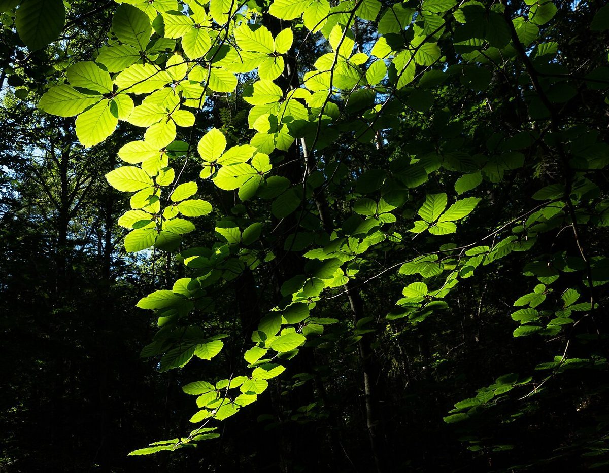
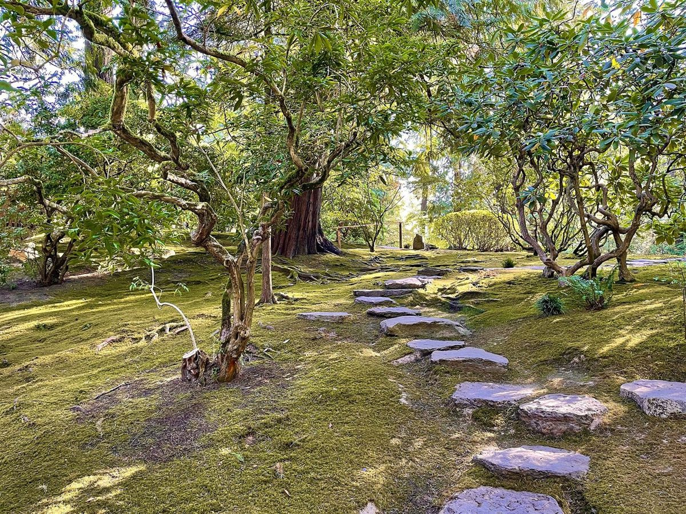
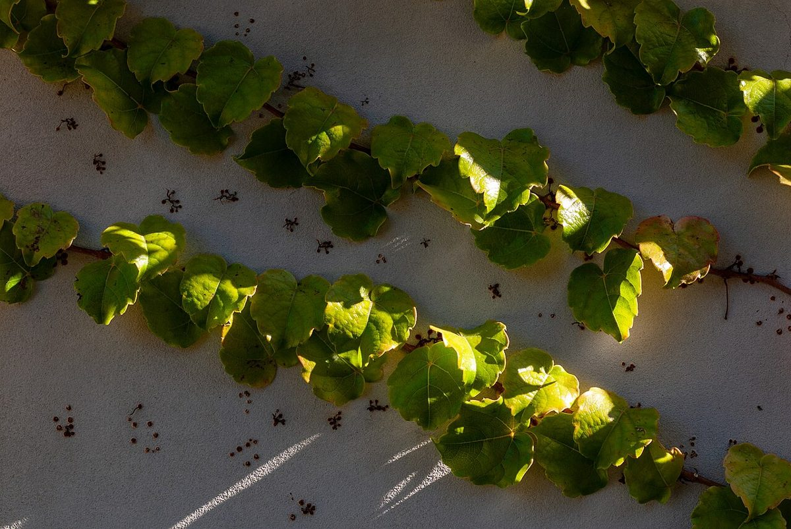
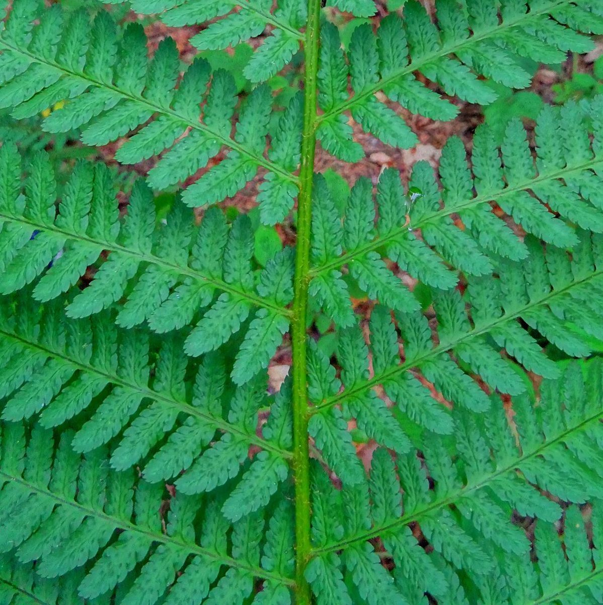
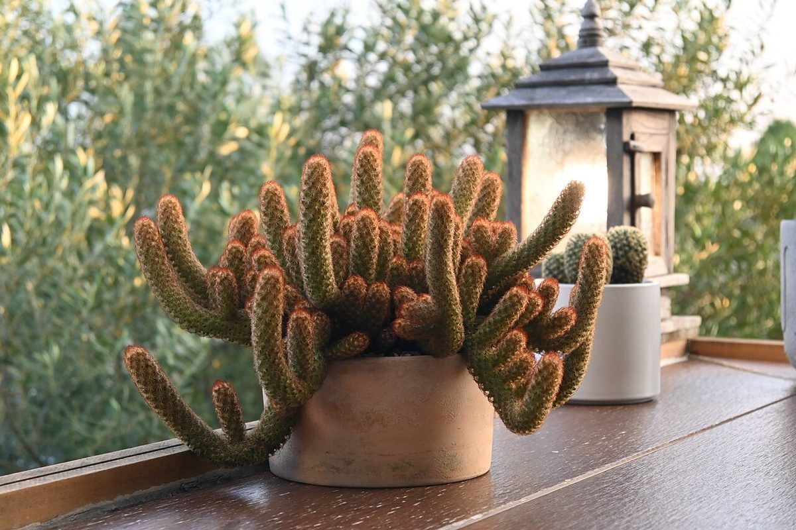

お庭カフェブリエ



制作側の連想
「ブリエ」を、光る、から考えた
店名の由来は分かりません。制作側は「ブリエ」という響きから、フランス語で「光る・輝く」を意味する言葉(briller)を連想しました。そこで「お庭」の一日を、光の当たり方で四つに分けて並べています。これは制作側の連想で、お店の理念や由来とは無関係です。
光の帖
庭に光が当たる、四つの時間帯(イメージ)
写真はお店や境港市のものではない、国外・撮影地不明のフリー素材です。時間帯は制作側の想像で、実際の営業時間とは関係ありません。
- 01あさの露

アガベの葉先に並ぶ小さな水滴(国外/撮影地不明のイメージ) 葉の先にのる水滴が、いちばん小さく光るころ。
- 02こもれ日

苔と飛び石、木々の間に光が差す庭(国外/撮影地不明のイメージ) 葉を透かした光が、木の下にまだらに落ちるころ。
- 03ひるの逆光

逆光に透ける葉と丸い光の玉(国外/撮影地不明のイメージ) 葉の向こうから光が差し込み、丸い玉が重なるころ。
- 04夕前の壁

壁を這うつる草に木漏れ日が当たる様子(国外/撮影地不明のイメージ) 低い日が、壁を這うつるを横から照らすころ。
庭の素材帖
お庭を想像する、小さな光のかけら





ご案内
お店のこと(確認できたものだけ)
| 所在地 | 〒684-0004 鳥取県境港市大正町126 |
|---|---|
| 電話 | なし |
| 営業時間 | 準備中 |
| 定休日 | 準備中 |
| ご予約 | 準備中 |
| 駐車場 | 準備中 |
| SNS | Instagram @briller_oniwa_tottori |